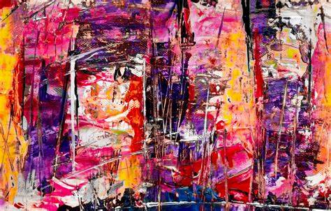

Karya Pertama
Karya ini adalah lukisan abstrak yang terinspirasi oleh alam dan emosi manusia. Saya menggunakan teknik berlapis untuk menciptakan tekstur yang menarik dan perpaduan warna yang dinamis. Setiap sentuhan kuas mengungkapkan perasaan dan pemikiran yang terpendam dalam diri saya.